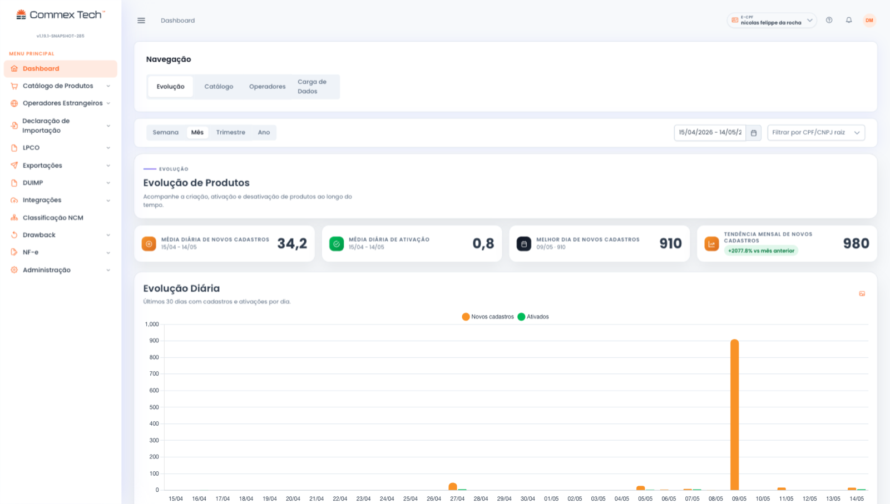

Sete módulos entre o seu ERP e o Portal Único
Um despacho pode travar por NCM mal fundamentada, atributo faltando no cadastro ou LPCO fora do prazo. Os 7 módulos cobrem essas frentes, da classificação à declaração. Contrate o conjunto ou comece por uma frente só.
Base: Cadastro de Produtos · Adicionais: Classificação NCM, Integrações ERP, DUIMP, LPCO, DU-E e NFe
O fluxo do catálogo ao Portal Único
Um dado errado no catálogo vira exigência no desembaraço. Por isso o fluxo cobre o caminho inteiro: o catálogo chega do ERP, a IA classifica e preenche os atributos, o score de confiança separa o que segue direto do que passa pela revisão de um classificador, e só então o dado entra no Portal Único. Tudo vai para a trilha de auditoria, com o responsável e a base legal de cada decisão.

Dashboard da plataforma: evolução do catálogo, novos cadastros e ativações no mesmo painel.
A base e os módulos que se somam a ela
Toda operação começa pelo Cadastro de Produtos, a base da plataforma. Os outros seis módulos são adicionais e entram conforme a necessidade: classificação, integração com o ERP, importação, licenças, exportação e nota fiscal.
Cadastro de Produtos
Cadastro de produtos em massa, com IA e trilha de auditoria. É o catálogo que sustenta todos os outros módulos, do primeiro registro à declaração.
Conhecer o módulo →Seis módulos que se somam à base, cada um contratado conforme a operação pede.
Classificação NCM com IA
De 3–4 horas para 5 minutos por produto, com score de confiança e base legal registrada em cada decisão.
Conhecer o módulo →Integrações ERP
SAP, TOTVS, Oracle, OSGT e sistemas próprios conectados por API REST ou SFTP, em ambiente multi-tenant isolado.
Conhecer o módulo →DUIMP
Produto, atributos e classificação consistentes antes do registro no novo processo de importação.
Conhecer o módulo →LPCO
Licenças e anuências acompanhadas junto com o resto da operação, sem prazo estourado nem embarque parado por documento.
Conhecer o módulo →DU-E
Exportação com o mesmo padrão de governança da importação. Os dados do catálogo seguem consistentes até a DU-E.
Conhecer o módulo →NFe
A mesma base de produtos alimenta a nota fiscal e a declaração.
Conhecer o módulo →A base da plataforma e os módulos adicionais
Toda contratação parte do mesmo produto base, o Cadastro de Produtos. Os adicionais atendem classificação, integração, importação, licença, exportação e nota fiscal, e entram conforme a necessidade da operação.
Cadastro de Produtos
O catálogo que sustenta toda a operação de comex.
- Cadastro de produtos em massa
- Preenchimento e validação de atributos com IA
- Trilha de auditoria completa por SKU: quem, quando e com qual base legal
- SLA contratual de 99,5%, com disponibilidade real acima de 99,9%
- Suporte em dias úteis, 8h–18h, com treinamento inicial incluso
O que se soma à base
Cada um estende o mesmo cadastro e a mesma trilha de auditoria, sem criar um sistema paralelo para o seu time manter.
- Classificação NCM: de 3–4 horas para 5 minutos por produto, com base legal registrada
- Integrações ERP: SAP, TOTVS, Oracle, OSGT e sistemas próprios
- DUIMP: prontidão para o novo processo de importação
- LPCO: licenças e anuências dentro do prazo
- DU-E: exportação com a mesma governança da importação
- NFe: nota fiscal e comex sobre a mesma base de produtos
Quatro números da plataforma
O relato da XCMG sobre o cadastro com SAP e OSGT integrados.
A XCMG vem obtendo excelentes resultados com a solução desenvolvida em parceria com a Commex Tech para o processo de cadastro de produtos e integração com os sistemas SAP e OSGT.
Antes da implantação da ferramenta, o processo de cadastro demandava maior esforço operacional, com diversas etapas manuais e necessidade de controles paralelos para garantir a consistência das informações. Com a solução implementada pela Commex Tech, passamos a contar com um fluxo mais organizado, padronizado e eficiente, proporcionando maior agilidade no cadastro de produtos e mais segurança para nossos processos.
A centralização das informações em uma única plataforma trouxe ganhos significativos em controle, rastreabilidade e confiabilidade dos dados, reduzindo retrabalhos e facilitando o gerenciamento das atividades do dia a dia. As integrações com SAP e OSGT também contribuíram de forma importante para a otimização da operação, permitindo um fluxo de informações mais ágil entre os sistemas e reduzindo intervenções manuais.
Outro destaque é o suporte prestado pela equipe da Commex Tech. Desde o início do projeto, contamos com um atendimento próximo, ágil e comprometido, sempre disponível para esclarecer dúvidas, apoiar na resolução de eventuais problemas e contribuir para a evolução contínua dos processos.
A parceria com a Commex Tech tem agregado valor à nossa operação, trazendo mais organização, controle, produtividade e segurança para o cadastro e gestão das informações de produtos.
Comece por um módulo. O resto entra quando você precisar.
Uma conversa de diagnóstico mostra onde a sua operação está exposta hoje, da classificação à declaração, e qual combinação de módulos resolve.
Falar com um especialista →Sede em Joinville/SC · atendimento em todo o Brasil · suporte em dias úteis, 8h–18h